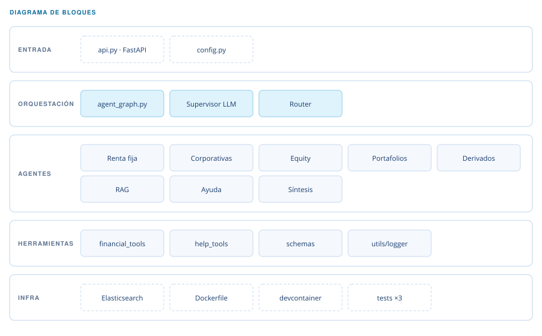

CFAAgent
Sistema multi-agente para estudiar el programa CFA.

Qué es
Ocho agentes especializados —renta fija, finanzas corporativas, equity, portafolios, derivados, búsqueda, ayuda y síntesis— coordinados por un supervisor que decide quién responde.
El concepto. Una pregunta teórica y una de cálculo no se responden igual. El supervisor clasifica en una sola pasada —teórica, práctica o de ayuda— y enruta: lo teórico va a búsqueda vectorial con la consulta traducida al inglés y enriquecida con términos CFA; lo práctico va al especialista que tiene la fórmula. Si un proveedor de modelo se cae, la cadena sigue con el siguiente.
- Python 3.11
- LangGraph
- FastAPI
- Elasticsearch
- Docker
Cómo está compuesto
El enrutado es la pieza: define qué agente responde y con qué contexto.

Clasificación en una pasada
Teórica, práctica o ayuda, en torno a medio segundo.
Microservicio de búsqueda
RAG separado, con índice invertido y deduplicación.
Cadena de respaldo
Si un proveedor falla, el siguiente responde.
Tres suites de tests
Supervisor, agentes y herramientas financieras.